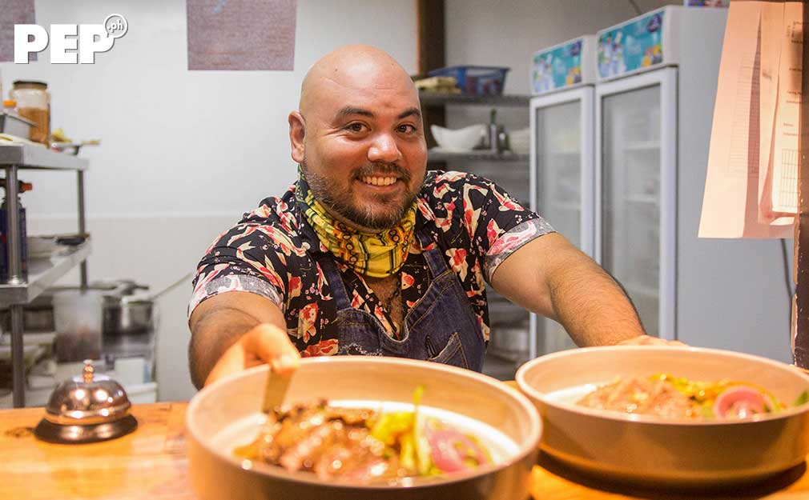
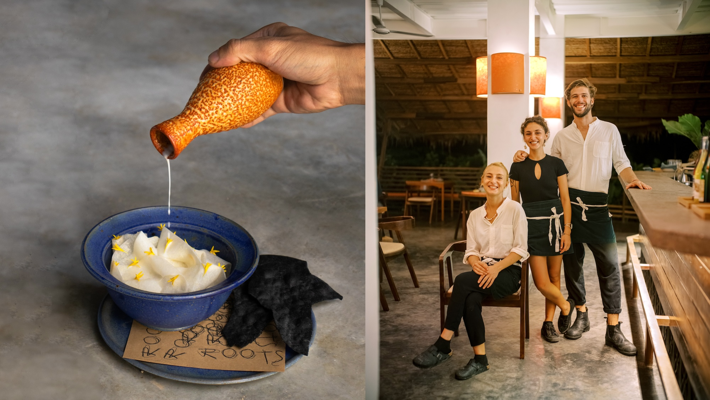
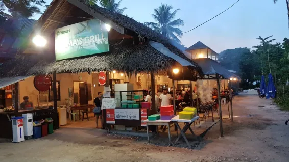

Chef Andrew Malarky, originally from Canada, co-founded Wild Restaurant in General Luna. His culinary journey spans over 18 years, with experiences in renowned establishments across North America. During the pandemic, Wild Restaurant initiated a "Kitchen Takeover" program, providing a platform for local chefs to showcase their talents. This initiative not only supported the community but also enriched Siargao's diverse food scene.

Roots, located within Kaimana Resort, is a collaborative effort by chefs from Spain, Italy, Mexico, and Portugal. They blend their rich culinary traditions with local Filipino ingredients, creating a unique dining experience. The restaurant emphasizes sustainability, sourcing produce from local farmers and incorporating eco-friendly practices in its operations.

Mama’s Grill is a beloved carinderia (local eatery) in Siargao, known for its grilled meats and home-cooked meals. It's a favorite spot for both locals and tourists seeking authentic Filipino flavors in a casual setting.